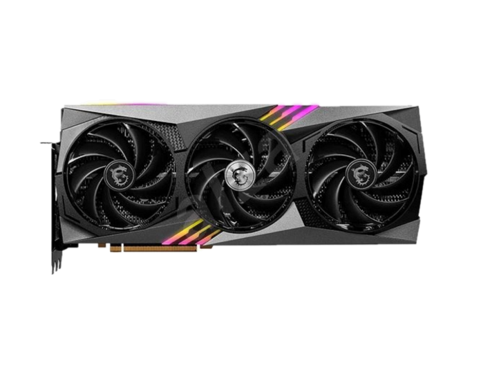
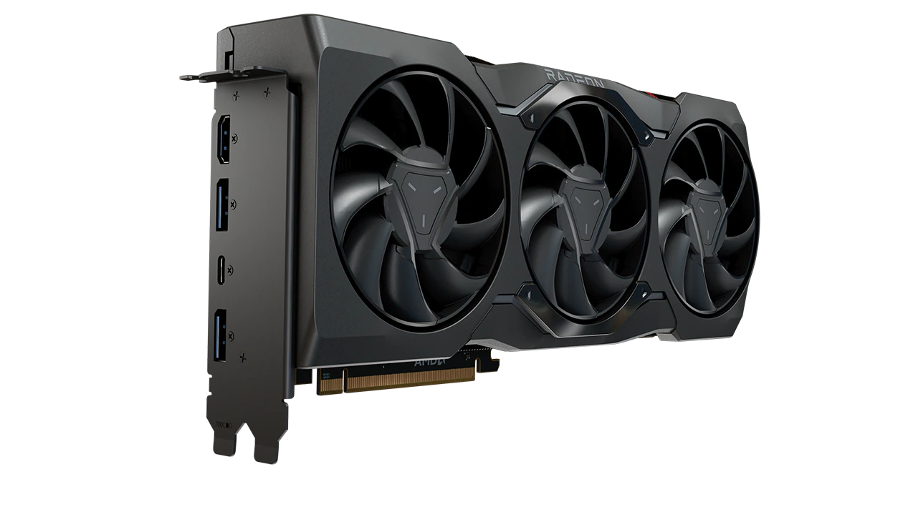

Co jsou to grafické karty K čemu? Připojení do pc Co jsou to grafické karty Grafická karta je výpočetní zařízení, které se používá k zpracování a zobrazení grafiky, obrazových dat a videa na počítači. Jedná se o specializovaný hardware, který je schopen provádět rychlé výpočty a optimalizovat zobrazování grafiky. Grafická karta obsahuje grafický procesor (GPU), který je zodpovědný za zpracování grafických úloh, a také paměť, která slouží k ukládání a rychlému přístupu k datům. K čemu je potřebujeme? Grafické karty jsou nezbytné pro plynulé zobrazení grafiky při hraní her, pro práci s náročnými grafickými aplikacemi, jako jsou programy pro úpravu fotografií a videa, a pro zobrazení vysoce kvalitního videa a filmů. Moderní grafické karty často obsahují také pokročilé funkce, jako je podpora více monitorů, ray tracing (technika simulace světla), umělá inteligence a virtuální reality.  Obrázek nejnovější grafické karty od Nvidia (MSI RTX4090)  Obrázek nejnovější grafické karty od AMD (Radeon RX 7900) Připojení do P C Grafické karty se připojují k počítači pomocí sběrnice (nejčastěji PCI Express) a mají vlastní ovladače a software, který umožňuje komunikaci s operačním systémem a dalšími aplikacemi. Díky grafickým kartám je možné dosáhnout vysokého výkonu a kvality zobrazení, což přináší lepší vizuální zážitek uživatelům a umožňuje vykonávat náročné grafické úlohy.